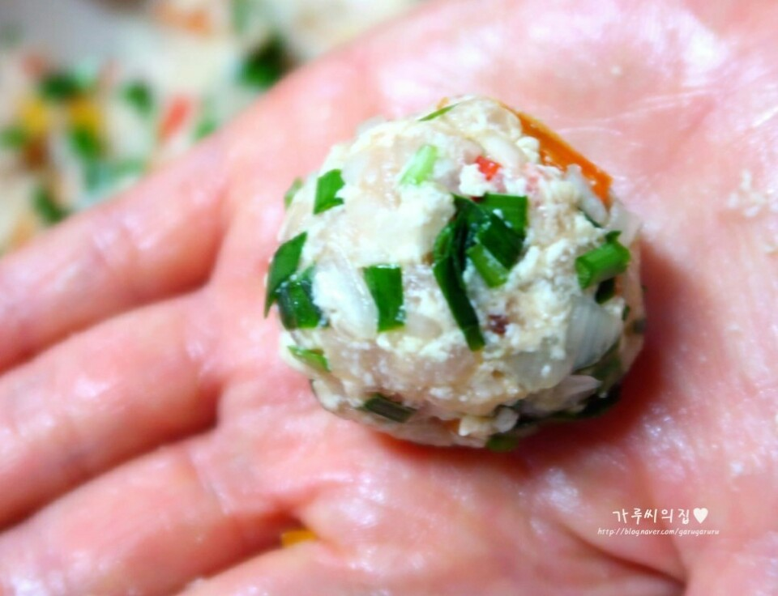

Ingredients
주 재료
- 다진 돼지고기180~200g
- 두부180g
- 양파1/2개
- 표고버섯1/2개
- 부추10줄기
- 파프리카조금
양념
- 소금1/2큰술
- 들기름1큰술
- 후추약간
- 생강조금
- 밀가루2큰술
- 달걀1개
Steps
- 먼저 준비한 두부 위에 칼을 옆으로 눕혀준 다음, 힘을 줘 뭉개주세요.
- 뭉개진 두부를 면포 안에 넣어 감싸준 다음, 엎어놓은 그릇 위에서 면포를 올려 손으로 꾸욱 힘을 줘 물기를 빼주세요.
- 파프리카와 부추, 표고버섯, 양파까지 모두 잘게 다져주세요. (잘게 다져줘야 모양이 예쁘게 나오겠죠.) 이걸로 재료 준비는 끝. 이제 반죽을 만들어볼까요~♪
- 용기에 밑에 재료를 넣고 손으로 잘 치대주세요. (반죽 재료 중 부추를 빼고 다 넣어주시면 된답니다.)
- 마무리로 부추를 넣고 한 번 만 더 치대주시면 반죽은 끝.
- 반죽을 한 입에 먹기 좋은 사이즈로 떼내어 동글동글한 모양을 만들어,

- 꾹 눌러 납작하게 해준 다음, 가운데를 손가락으로 살짝 눌러주세요.
- 완성된 반죽 양면에 밀가루를 묻혀주세요. 그리고 프라이팬 위에 올리기 직전 계란물을 앞뒤 다 입혀주세요!!
- 예열된 프라이팬에 계란물까지 다 입힌 반죽을 올려 중불에서 양면 다 노릇노릇하게 (6분~) 지져주세요.